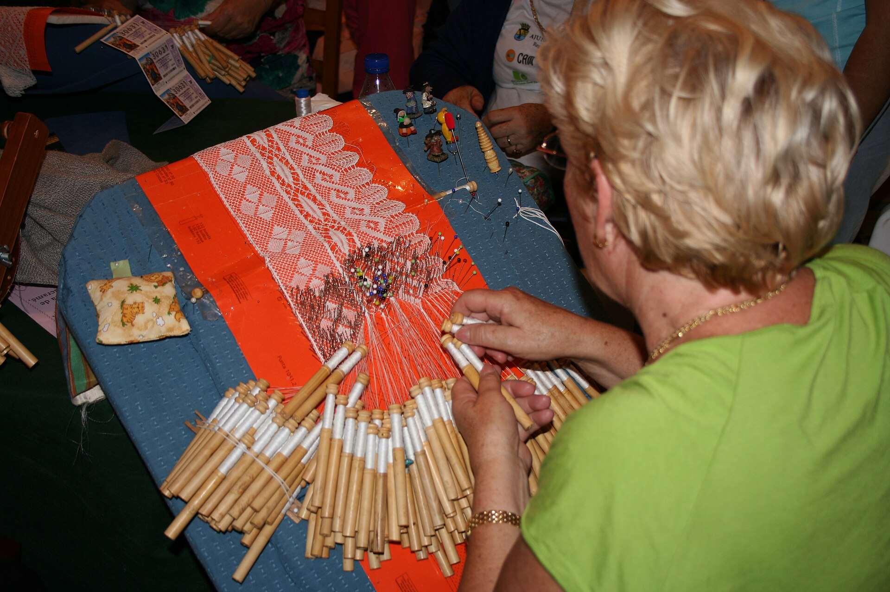
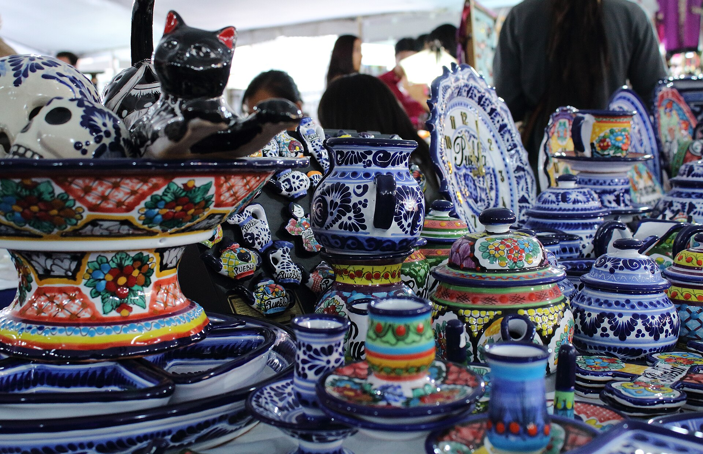

Durante todo el día día, la carpa central acogerá demostraciones de cerámica, cestería, textil y joyería contemporánea, además de una pequeña zona de venta directa. La organización ha insistido en que el objetivo no es solo exponer piezas acabadas, sino explicar cómo se hacen y qué valor aporta el trabajo manual frente al producto industrial. El programa incluirá también una mesa redonda sobre comercio digital, un curso breve de fotografía para catálogos y un recorrido por el mercado municipal para poner en contacto a artesanas y tiendas que buscan producto local. Además, se habilitará un punto de asesoría para resolver dudas sobre precios, embalaje y envíos, con el fin de mejorar la rentabilidad de los talleres. La iniciativa ha contado con el apoyo de varias asociaciones culturales y de la escuela municipal de adultos.
Sala de prensa
Buenavista de Valdavia reunirá a veinte artesanos para acercar los oficios al vecindario
Las jornadas, organizadas junto al ayuntamiento, combinarán demostraciones, formación y venta directa entre el 18 y el 20 de mayo.

-
Cerámica
La cerámica combina técnicas tradicionales con acabados contemporáneos y mostrará cómo se preparan las pastas, se tornean las piezas y se controlan los hornos para lograr texturas resistentes.
-
Forja
La forja pondrá en valor el trabajo con hierro reciclado, desde el diseño de herramientas hasta el tratamiento final, con demostraciones de martillado, temple y acabados seguros para uso cotidiano.
-
Cestería
La cestería enseñará el trenzado de fibras locales y el secado de materiales, además de técnicas para reforzar bordes y crear piezas utilitarias pensadas para mercados y comercios de proximidad.
Formación y comercio de proximidad
Además de las demostraciones, se ofrecerán sesiones breves para mejorar catálogos digitales, fotografía de producto y estrategias de venta directa en mercados locales. También se abordará la planificación de stock, la selección de materiales sostenibles y la creación de relatos de marca que conecten con el vecindario.
Queremos que la gente vea el oficio de cerca, entienda los tiempos de elaboración y se lleve ideas concretas para apoyar a los talleres del entorno.

La organización también ha reservado un espacio para encuentros con comercios del barrio que buscan producto artesanal estable durante todo el año, con rondas de presentación cortas y muestras físicas para facilitar acuerdos directos.